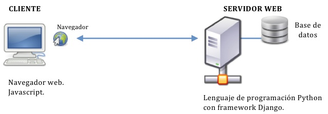

Capitulo 1 Generalidades
Lenguajes de programación. Generalidades.
¿Qué es?
Los lenguajes de programación son un conjunto de códigos (con sentido sintáctico y semántico) que se le asignan a la computadora, para indicarles ciertas instrucciones especificas acerca de los programas que usa la misma; es usado para controlar su comportamiento. El programador es el encargado de usar el lenguaje de programación para crear un grupo de pasos a seguir que, al final, constituirá un programa o subprograma informático.
Clasificación.
1.- El lenguaje máquina: Es el lenguaje que entiende directamente la computadora, utilizando el código binario (0 y 1), con estos dos números se forman cadenas binarias que transforman lo que quiere decir el usuario a la máquina, para realizar una acción.
2.- Lenguajes de programación de bajo nivel: Los lenguajes de este tipo pueden crear programas muy rápidos, pero son difíciles de aprender, son específicos de cada procesador, si nos llevamos el programa a otro computador será preciso reescribir el programa desde el comienzo.
3.- Lenguajes de programación de alto nivel: A diferencia de los de bajo nivel, éstos no ocupan ser específicos de cada ordenador, siendo más fáciles de aprender, porque se usan palabras o comandos del lenguaje común; como por ejemplo: el ingles o el español (castellano). Se pueden clasificar de la siguiente manera:
Lenguajes de programación imperativos: Como Cobol, Pascal, C y Ada. Lenguajes de programación declarativos: El lisp o el prolog. Lenguajes de programación orientados a objetos: El smalltalk es el más famoso. Lenguajes de programación orientados al problema: Son aquellos lenguajes específicos para gestión. Lenguajes de programación naturales: Son aquellos lenguajes que pretenden aproximar el diseño y la construcción de programas al lenguaje de las personas.
Otra clasificación de este tipo de lenguajes de programación es de acuerdo al desarrollo tecnológico que han ido teniendo las computadoras, pero de éstas sólo nos remitimos a mencionarlas.
¿Qué es un compilador?
Los compiladores son programas o herramientas encargadas de compilar. Un compilador toma un texto (código fuente) escrito en un lenguaje de alto nivel y lo traduce a un lenguaje comprensible por las computadoras (código objeto).
Características:
Generalmente un compilador se divide en dos partes: FRONT END (Parte que analiza el código fuente y todo el proceso para transformarlo en el código objeto) y BACK END (Parte que se encarga de generar el código máquina exclusivo para una plataforma, a partir de lo analizado en el Front End). Por lo general el resultado del Back End no puede ser ejecutado directamente, se necesita pasar por un proceso de enlazado (linker).
Tipos:
Existen varios tipos de compiladores: Compiladores cruzados, Compiladores optimizadores, Compiladores de una sola pasada, Compiladores de varias pasadas, Compiladores JIT (Just In Time).
Referencias
Lenguajes de programación. Generalidades: Tomado de: https://hazaelocielx.wordpress.com/2010/08/20/lenguajes-de-progamacion-generalidades/
Capitulo 2 Introducción a la Programacion WEB
El objetivo de este tema es introducir en el entorno en el que se mueve la programación web y clarificar los conceptos fundamentales sobre los que nos vamos a ir moviendo en este curso. No se pretende que se dominen todos los términos pero sí obtener una idea general de donde van encajando las distintas tecnologías.
1. Entorno
En toda conexión web existen dos partes bien separadas: cliente y servidor. El cliente suele ser la máquina del usuario que utiliza un navegador de páginas web, el servidor es quien recibe esa petición, es donde reside el código de las diferentes páginas y la base de datos y es donde, en principio, se realiza el procesamiento.
Un escenario posible podría ser el siguiente: Cliente: Navegador Mozilla Firefox que realiza una conexión a http://www.appdjango.com. Servidor: Servidor web Apache que sirve la página web escrita en Django y cuya base de datos reside en el mismo servidor. Y un ejemplo de funcionamiento sería: Cliente: El usuario pide en el navegador la página http://www.appdjango.com. Servidor: Recibe la petición, reconoce que es para una aplicación Django en concreto y asigna una hebra a resolver la petición. Ésta realiza los cálculos necesarios y devuelve la página HTML de portada de la web al navegador. Cliente: El navegador del usuario muestra la página HTML, debidamente formateada según su hoja de estilos (CSS). Cliente: Hace click en uno de los enlaces de la página, por lo que se envía otra petición, esta vez de la dirección http://www.appdjango.com/contacto/. Servidor: Llama de nuevo a Django para que resuelva la petición. … En algunos casos se requiere que en la parte del cliente se realicen una serie de procesamientos, como validación de formularios, presentación de calendarios para indicar una fecha, etc. En esos casos se suele hacer uso de Javascript como lenguaje de programación, éste se ejecuta en la máquina del usuario, lo que tiene sus ventajas e inconvenientes. En este curso no veremos ningún tema de Javascript, de todos modos sí se mostrarán ejemplos de uso e integración con Django más adelante. Otro ejemplo en el que el procesamiento se realiza en la máquina cliente es el uso de applets en Java, en ese caso el servidor entrega el código Java a ejecutar y es la máquina virtual Java del ordenador del usuario quien realiza esa ejecución. En este curso vamos a ver el escenario más habitual: es en el servidor donde reside la lógica de programación. Ejemplos de lenguajes para programación web que se ejecutan en el servidor son: PHP, ASP, Python, Ruby on Rails, JSP, … En entornos de desarrollo, a fin de poder hacer pruebas de manera más fácil, la máquina cliente y servidor es la misma, éste será el entorno que utilizaréis para realizar el trabajo final aunque se explicará como implantar una aplicación Django en servidor Apache y configurarla para servir en producción.
2. Tecnologías
A continuación un párrafo breve explicatorio de algunas de las tecnologías a utilizar en este curso.
Framework
Estructura conceptual y tecnológica de soporte definido, normalmente con artefactos o módulos de software concretos, con base a la cual otro proyecto de software puede ser más fácilmente organizado y desarrollado. Típicamente, puede incluir soporte de programas, bibliotecas, y un lenguaje interpretado, entre otras herramientas, para así ayudar a desarrollar y unir los diferentes componentes de un proyecto [1]. Así cuando nos referimos al “framework Django” estamos haciendo referencia a un conjunto de bibliotecas y programas que permiten realizar aplicaciones web en Python de manera más sencilla y elegante que utilizando solo Python.
Navegador-web
Es una aplicación que opera a través de Internet, interpretando la información de archivos y sitios web para que podamos ser capaces de leerla. El navegador interpreta el código, HTML generalmente, en el que está escrita la página web y lo presenta en pantalla permitiendo al usuario interactuar con su contenido y navegar hacia otros lugares de la red mediante enlaces o hipervínculos. La funcionalidad básica de un navegador web es permitir la visualización de documentos de texto, posiblemente con recursos multimedia incrustados. Los documentos pueden estar ubicados en la computadora en donde está el usuario, pero también pueden estar en cualquier otro dispositivo que esté conectado a la computadora del usuario o a través de Internet. Tales documentos, comúnmente denominados páginas web, poseen hipervínculos que enlazan una porción de texto o una imagen a otro documento, normalmente relacionado con el texto o la imagen. El seguimiento de enlaces de una página a otra, ubicada en cualquier computadora conectada a la Internet, se llama navegación, de donde se origina el nombre navegador [2].
HTML
HyperText Markup Language (lenguaje de marcado de hipertexto), es el lenguaje de marcado predominante para la elaboración de páginas web. Es usado para describir la estructura y el contenido en forma de texto, así como para complementar el texto con objetos tales como imágenes. El HTML se escribe en forma de etiquetas, rodeadas por corchetes angulares (<,>). HTML también puede describir, hasta un cierto punto, la apariencia de un documento, y puede incluir un script (por ejemplo JavaScript), el cual puede afectar el comportamiento de navegadores web y otros procesadores de HTML [3]. En el ámbito de este curso podemos considerar un documento HTML como el resultado final que enviará nuestra aplicación Django al navegador del usuario para que se visualice. HTML por tanto no es un lenguaje de programación sino una manera de estructurar la información.
CSS
El nombre hojas de estilo en cascada viene del inglés Cascading Style Sheets. CSS es un lenguaje usado para definir la presentación de un documento estructurado. El W3C (World Wide Web Consortium) es el encargado de formular la especificación de las hojas de estilo que servirán de estándar para los agentes de usuario o navegadores. La idea que se encuentra detrás del desarrollo de CSS es separar la estructura de un documento de su presentación [4]. Complementa por tanto lo definido en HTML, de manera que si se quiere modificar la apariencia de la web no haya que modificar el HTML sino solo las hojas de estilo (CSS).
Javascript
Es un lenguaje de programación interpretado. Se define como orientado a ob- jetos, basado en prototipos, imperativo, débilmente tipado y dinámico. Se utiliza principalmente en su forma del lado del cliente, implementado como parte de un navegador web permitiendo mejoras en la interfaz de usuario y páginas web dinámicas, en bases de datos locales al navegado. JavaScript se diseñó con una sintaxis similar al C, aunque adopta nombres y convenciones del lenguaje de programación Java. Sin embargo Java y JavaScript no están relacionados y tienen semánticas y propósitos diferentes. Todos los navegadores modernos interpretan el código JavaScript integrado en las páginas web [5].
Python
Es un lenguaje de programación de alto nivel cuya filosofía hace hincapié en una sintaxis muy limpia y que favorezca un código legible. Se trata de un lenguaje de programación multiparadigma ya que soporta orientación a objetos, programación imperativa y, en menor medida, programación funcional. Es un lenguaje interpretado, usa tipado dinámico, es fuertemente tipado y multiplataforma [6].
Django
Se autodefinen como “El framework web para perfeccionistas con límites de tiempo” y proclaman que “con Django es más fácil realizar buenas aplicaciones web más rápido y con menos código” [7]. Es un framework de desarrollo web de código abierto, escrito en Python, que cumple en cierta medida el paradigma del Modelo Vista Controlador. Fue desarrollado en origen para gestionar varias páginas orientadas a noticias de la World Company de Lawrence, Kansas, y fue liberada al público bajo una licencia BSD en julio de 2005; el framework fue nombrado en alusión al guitarrista de jazz gitano Django Reinhardt. En junio del 2008 fue anunciado que la recién formada Django Software Foundation se haría cargo de Django en el futuro. La meta fundamental de Django es facilitar la creación de sitios web complejos. Django pone énfasis en el re-uso, la conectividad y extensibilidad de componentes, el desarrollo rápido y el principio No te repitas (DRY, del inglés Don’t Repeat Your- self). Python es usado en todas las partes del framework, incluso en configuraciones, archivos, y en los modelos de datos [8].
Apache
Baste con decir que es el servidor de páginas web más utilizado. Como concepto básico es un servicio de Linux que recibe peticiones de páginas webs como direcciones (urls) y decide qué hacer con cada petición según como esté configurado. De manera abstracta: convierte urls en respuestas webs, como por ejemplo, una página [9]. En nuestro caso será el encargado de invocar a Django para que responda a las peticiones en una dirección dada.
Referencias
Información tomada de: perezmartin.es
Capitulo 3 Introducción al uso de DBMS para programación web
Introducción a las bases de datos
Las bases de datos se ingeniaron gracias a la necesidad de las grandes empresas de almacenar ingentes cantidades de información de una forma rápida, sencilla y fiable, y que a su vez pudieran acceder a ella en cualquier momento sin necesidad de desplazarse a salas dedicadas a archivar documentación, como hasta hace poco se venia haciendo.
Cuando comenzó el despegue de los programas informáticos se empezaron a almacenar datos en los archivos de los programas, lo cual era más cómodo pero aun así tenían grandes dificultades a la hora de querer modificar registros, estructuras o simplemente buscar información.
A finales de los años sesenta nacen las bases de datos. En estas bases de datos se guardan los datos utilizados por los usuarios, empresas, etc. Y los programas que los utilizan no se tienen que preocupar de su mantenimiento ni almacenaje por lo que un cambio en la base de datos no tiene porque afectar en principio a los programas que la utilizan.
Como definición de base de datos entendemos que se trata de un conjunto de datos interrelacionados y almacenados sin redundancias innecesarias, los cuales sirven a las aplicaciones sin estar relacionados de una manera directa entre ellos.
Una base de datos puede ser utilizada por varias aplicaciones y usuarios. Toda base de datos debe permitir insertar, modificar y borrar datos por lo que en las bases de datos se guarda información de dos tipos: - Los datos de usuarios (datos usados por las aplicaciones) - Los datos de sistema (datos que la base de datos utiliza para su gestión. Ej. Datos de los usuarios que tienen acceso a la base de datos)
Organización de una base de datos
Para considerar a una base de datos organizada debe cumplir los siguientes objetivos: - Tiene que ser versátil: esto quiere decir que, dependiendo de los usuarios o las aplicaciones, puedan hacer diferentes cosas o traten a los datos de formas distintas. - Tiene que atender con la rapidez adecuada a cada aplicación o empresa, atendiendo a lo que se la requiera. - Tiene que tener un índice de redundancia lo más bajo posible. - Tener una alta capacidad de acceso para ganar el mayor tiempo posible en la realización de consultas. - Tener un alto índice de integridad, esto significa que al tener muchos usuarios atacando a una misma base de datos no puede haber fallos en la inserción de datos, errores por redundancia o lenta actualización. - Por supuesto tienen que tener un nivel altísimo de seguridad y privacidad ya que los datos que se pueden almacenar en una base de datos pueden ser altamente confidenciales o importantes. En este punto también entran los medios físicos de protección contra fuego, robo, etc. - Por ultimo tiene que ser posible su constante actualización para no dejar a la base de datos anticuada e inservible. Cuando hacemos un cambio en la organización física de los datos no debe afectar a los programas por lo que también tiene que tener una independencia física de los datos. Al igual que tiene que tener total independencia lógica con los datos, esto quiere decir que si hacemos cambios en la estructura lógica de los datos (agregar nuevos campos a una tabla) no deben afectar a las aplicaciones que utilicen esos datos.
Referencias
Página Web desarrollo web introducción a las bases de datos. Tomado de http://www.desarrolloweb.com/articulos/introduccion-base-datos.html